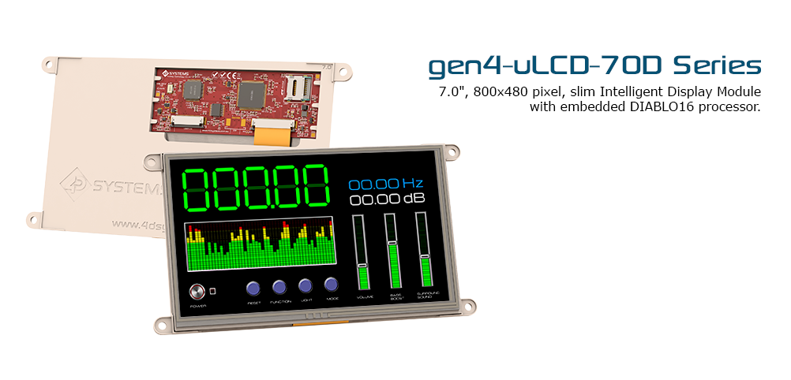

Introduction
The gen4 series was designed specifically for ease of integration and use, with careful consideration for space requirements and functionality. This specific gen4 module features a 7.0” colour TFT LCD display, with Resistive Touch (DT), or Capacitive Touch (DCT). It is powered by the feature-rich 4D Systems Diablo16 Graphics Processor, which offers an array of functionality and options for any Designer / Integrator / User.
The Diablo16 processor features include 16 customisable GPIO, capable of PWM, Serial, I2C, SPI, Pulse Out, Quadrature Input, and Analog Input.
The 7.0” Diablo16 Integrated Display Module features a TFT LCD Display, is capable of Touch Detection, microSD memory Storage, GPIO and Communications, along with multiple millisecond resolution timers, and Audio Generation.
The gen4 Range is 100% compatible with the Workshop4 IDE and its 4 different development environments, providing the User with a wealth of options for programming and controlling their system.
Anything designed to run on other 4D Systems display modules featuring Picaso or Diablo16 Graphic Processors can be run on this gen4 Integrated Display Module, with little or no required modifications. Please contact 4D Systems Support Team for assistance if migrating from a previous model.
The gen4 Range of Integrated Display Modules features a 30 pin ZIF socket, designed for a 30 pin FPC cable, for easy and simple connection to an application or mother board, or for connecting to accessory boards for a range of functionality advancements.
The gen4 series of modules has been designed to minimise the impact of display related circuitry, and provide a platform suitable for integration into a product. Application boards can sit flush on the back of the gen4 if required, as the display related electronics sit inside the plastic mounting base, leaving the application board surface clear for User circuitry.
Screen
The gen4 series was designed specifically for ease of integration and use, with careful consideration for space requirements and functionality. This specific gen4 module features a 7.0” colour TFT LCD display, with Resistive Touch (DT), or Capacitive Touch (DCT). It is powered by the feature-rich 4D Systems Diablo16 Graphics Processor, which offers an array of functionality and options for any Designer / Integrator / User.
The Diablo16 processor features include 16 customisable GPIO, capable of PWM, Serial, I2C, SPI, Pulse Out, Quadrature Input, and Analog Input.
The 7.0” Diablo16 Integrated Display Module features a TFT LCD Display, is capable of Touch Detection, microSD memory Storage, GPIO and Communications, along with multiple millisecond resolution timers, and Audio Generation.
The gen4 Range is 100% compatible with the Workshop4 IDE and its 4 different development environments, providing the User with a wealth of options for programming and controlling their system.
Anything designed to run on other 4D Systems display modules featuring Picaso or Diablo16 Graphic Processors can be run on this gen4 Integrated Display Module, with little or no required modifications. Please contact 4D Systems Support Team for assistance if migrating from a previous model.
The gen4 Range of Integrated Display Modules features a 30 pin ZIF socket, designed for a 30 pin FPC cable, for easy and simple connection to an application or mother board, or for connecting to accessory boards for a range of functionality advancements.
The gen4 series of modules has been designed to minimise the impact of display related circuitry, and provide a platform suitable for integration into a product. Application boards can sit flush on the back of the gen4 if required, as the display related electronics sit inside the plastic mounting base, leaving the application board surface clear for User circuitry.
Features
- Powerful 7.0” Intelligent LCD-TFT display module powered by DIABLO16.
- 800 x 480 Resolution, RGB 65K true to life colours, TFT Screen with integrated 4-wire Resistive Touch Panel (on DT model only), integrated Capacitive Touch (on DCT model only), or non-touch.
- 6 banks of 32750 bytes of Flash memory for User Application Code and Data.
- 32Kb of SRAM purely for the User.
- 16 General Purpose I/O pins for user interfacing, which include 4 configurable Analog Inputs.
- The GPIO is variously configurable for alternative functions such as:
- 3x I2C channels available.
- 1x SPI dedicated for SD Card and 3x configurable SPI channels available.
- 1x dedicated and 3x configurable TTL Serial comm ports available.
- Up to 6 GPIO can be used as Pin Counters.
- Up to 6 GPIO for PWM (simple and Servo).
- Up to 10 GPIO for Pulse Output.
- Up to 14 GPIO can be configured for Quadrature Encoder Inputs (2 channels).
- 30pin FPC connection, for all signals, power, communications, GPIO and programming.
- On-board latch type micro-SD memory card connector for multimedia storage and data logging purposes.
- DOS compatible file access (FAT16 format) as well as low level access to card memory.
- Dedicated PWM Audio pin driven by WAV files from micro-SD card, and for sound generation, for an external amplifier.
- Display full colour images, animations, icons and video clips.
- Supports all available Windows fonts.
- 4.0V to 5.5V range operation (single supply).
- Module dimensions:
- (D): 187.0 x 102.1 x 7.2mm.
- (D-CLB): 190.1 x 121.9 x 7.3mm.
- (DT): 187.0 x 102.1 x 8.3mm.
- (DCT-CLB): 190.1 x 121.9 x 8.2mm.
- 4x mounting tabs with 4.2mm holes for mechanical mounting using M4 screws (D and DT only).
- RoHS and REACH compliant.
- CE Compliant – please ask for CE declarations from our Support Team.
Hardware Overview
| Pin | Symbol | I/O | Description |
|---|---|---|---|
| 1 | GND | P | Supply Ground |
| 2 | PA3 | I/O/A | General Purpose I/O pin with Analog Capability. This pin has a range of 0-3.3V when used as an Analog Input, and is 3.3V tolerant only. Also used for Bus Read |
| 3 | PA2 | I/O/A | General Purpose I/O pin with Analog Capability. This pin has a range of 0-3.3V when used as an Analog Input, and is 3.3V tolerant only. Also used for Bus Write |
| 4 | PA1 | I/O/A | General Purpose I/O pin with Analog Capability. This pin has a range of 0-3.3V when used as an Analog Input, and is 3.3V tolerant only. |
| 5 | PA0 | I/O/A | General Purpose I/O pin with Analog Capability. This pin has a range of 0-3.3V when used as an Analog Input, and is 3.3V tolerant only. |
| 6 | PA9 | I/O | General Purpose Input/Output, 3.3V Level - 5V Tolerant |
| 7 | PA8 | I/O | General Purpose Input/Output, 3.3V Level - 5V Tolerant |
| 8 | PA7 | I/O | General Purpose Input/Output, 3.3V Level - 5V Tolerant |
| 9 | PA6 | I/O | General Purpose Input/Output, 3.3V Level - 5V Tolerant |
| 10 | PA5 | I/O | General Purpose Input/Output, 3.3V Level - 5V Tolerant |
| 11 | PA4 | I/O | General Purpose Input/Output, 3.3V Level - 5V Tolerant |
| 12 | PA10 | I/O | General Purpose Input/Output, 3.3V Level - 5V Tolerant |
| 13 | PA11 | I/O | General Purpose Input/Output, 3.3V Level - 5V Tolerant |
| 14 | PA12 | I/O | General Purpose Input/Output, 3.3V Level - 5V Tolerant |
| 15 | PA13 | I/O | General Purpose Input/Output, 3.3V Level - 5V Tolerant |
| 16 | PA14 | I/O | General Purpose Input/Output, 3.3V Tolerant only. Special I2C Pin. |
| 17 | PA15 | I/O | General Purpose Input/Output, 3.3V Tolerant only. Special I2C Pin. |
| 18 | NC | - | Not Connected |
| 19 | AUDIO_OUT | O | Audio Output, Filtered PWM, to feed into external amplifier |
| 20 | AUDIOENB | O | Audio Amplifier Enable, to enable/disable external amplifier |
| 21 | GND | P | Supply Ground |
| 22 | RESET | I | Master Reset signal. Internally pulled up to 3.3V via a 10K resistor. An active Low pulse greater than 2 micro-seconds will reset the module. If the module needs to be reset externally, only use open collector type circuits. This pin is not driven low by any internal conditions. The host should control this pin via one of its port pins using an open collector/drain arrangement. |
| 23 | RX0 | I | Asynchronous Serial Receive pin, TTL level. Connect this pin to the Transmit (Tx) signal of other serial devices. Used in conjunction with the TX pin for programming this microLCD. This pin is tolerant up to 5.0V levels. |
| 24 | TX0 | O | Asynchronous Serial Transmit pin, TTL level. Connect this pin to the Receive (Rx) signal of other serial devices. Used in conjunction with the RX pin for programming this microLCD. This pin is tolerant up to 5.0V levels. |
| 25 | GND | P | Supply Ground |
| 26 | 5V IN | P | Main Voltage Supply +ve input pin. Reverse polarity protected. Range is 4.0V to 5.5V, nominal 5.0V. |
| 27 | 5V IN | P | Main Voltage Supply +ve input pin. Reverse polarity protected. Range is 4.0V to 5.5V, nominal 5.0V. |
| 28 | NC | - | Not Connected |
| 29 | NC | - | Not Connected |
| 30 | GND | P | Supply Ground |
Hardware Interface
Serial Ports - TTL Level Serial
The DIABLO16 Processor has three hardware asynchronous serial ports (COM1 – COM3) that can be configured on a variety of the processors GPIO pins. TX/RX0 (COM0) is dedicated and its pins are fixed. All of the DIABLO16’s serial ports can be used to communicate with external serial devices.
TX/RX0 are referred to as COM0, and is the only one used for programming the DIABLO16 itself.
The primary features are:
- Full-Duplex 8 bit data transmission and reception.
- Data format: 8 bits, No Parity, 1 Stop bit.
- Independent Baud rates from 300 baud up to 600K baud.
- Single byte transmits and receives or a fully buffered service. The buffered service feature runs in the background capturing and buffering serial data without the user application having to constantly poll any of the serial ports. This frees up the application to service other tasks.
A single byte serial transmission consists of the start bit, 8-bits of data followed by the stop bit. The start bit is always 0, while a stop bit is always 1. The LSB (Least Significant Bit, Bit 0) is sent out first following the start bit. Figure below shows a single byte transmission timing diagram.
COM0 is also the primary interface for User program downloads, and configuration PmmC /Driver programming. Once the compiled 4DGL application program (EVE byte-code) is downloaded and the user code starts executing, the serial port is then available to the user application.
TX0 pin (Serial Transmit COM0): Dedicated Asynchronous Serial port COM0 transmit pin, TX0. Connect this pin to external serial device receive (Rx) signal. This pin is 5.0V tolerant.
RX0 pin (Serial Receive COM0): Dedicated Asynchronous Serial port COM0 receive pin, RX0. Connect this pin to external serial device transmit (Tx) signal. This pin is 5.0V tolerant.
TX1 pin (Serial Transmit COM1): Asynchronous Serial port COM1 transmit pin, TX1. Connect this pin to external serial device receive (Rx) signal. This pin is 5.0V tolerant. This can be configured to 1 of the GPIO pins, see table following.
RX1 pin (Serial Receive COM1): Asynchronous Serial port COM1 receive pin, RX1. Connect this pin to external serial device transmit (Tx) signal. This pin is 5.0V tolerant. This can be configured to 1 of the GPIO pins, see table following.
TX2 pin (Serial Transmit COM2): Asynchronous Serial port COM2 transmit pin, TX2. Connect this pin to external serial device receive (Rx) signal. This pin is 5.0V tolerant. This can be configured to 1 of the GPIO pins, see table following.
RX2 pin (Serial Receive COM2): Asynchronous Serial port COM2 receive pin, RX2. Connect this pin to external serial device transmit (Tx) signal. This pin is 5.0V tolerant. This can be configured to 1 of the GPIO pins, see table following.
TX3 pin (Serial Transmit COM3): Asynchronous Serial port COM3 transmit pin, TX3. Connect this pin to external serial device receive (Rx) signal. This pin is 5.0V tolerant. This can be configured to 1 of the GPIO pins, see table following.
RX3 pin (Serial Receive COM3): Asynchronous Serial port COM3 receive pin, RX3. Connect this pin to external serial device transmit (Tx) signal. This pin is 5.0V tolerant. This can be configured to 1 of the GPIO pins, see table following.
General Purpose I/O
There are 16 general purpose Input/Output (GPIO) pins available to the user. These provide flexibility of individual bit operations along with serving collectively for byte wise operations using the BUS functions
PA0-PA3: General purpose I/O pins, or can serve as Analog Input pins. Each pin can be individually set for INPUT or OUTPUT or ANALOG. Power-Up Reset default is all INPUTS. Digital GPIO can source/sink 10mA.
These pins have a 0 to 3.3V range, and have 12 bit resolution.
PA4-PA11: General purpose I/O pins. Each pin can be individually set for INPUT or OUTPUT. Power-Up Reset default is all INPUTS. When set as Digital Inputs, the pins are 5V tolerant. Digital GPIO can source/sink 10mA.
PA12-PA13:PA12 and PA13 are reserved and are used exclusively for the resistive touch controller, or the capacitive touch controller (DT/DCT-CLB models). These pins should not be connected else Touch performance may be degraded. There are 4.7K pullup resistors on each of these GPIO. Avoid these pins in normal situations. However, using these pins on non-touch (D/D-CLB models) is OK, or in situations where touch is not required. These pins are 5V tolerant.
PA14-PA15: General purpose I/O pins. Each pin can be individually set for INPUT or OUTPUT. Power-Up Reset default is all INPUTS. When set as Digital Inputs, the pins are 3.3V tolerant. Digital GPIO can source/sink 10mA. Under special situations, these pins can be utilised for a high speed I2C interface.
System Pins
+5V IN (Module Voltage Input) Module supply voltage input pins. Both of these pins should be connected to a stable supply voltage in the range of 4.0 Volts to 5.5 Volts DC. Nominal operating voltage is 5.0 Volts. Note backlight brightness will be lower for voltages under 5.0V.
GND (Module Ground) Device ground pins. At least two pins should be connected to ground.
RESET (Module Master Reset) Module Master Reset pin. An active low pulse of greater than 2μs will reset the module. Internally pulled up to 3.3V via a 10K resistor. Only use open collector type circuits to reset the device if an external reset is required.
AUDENB (Audio Enable Output) Output dedicated to enable or disable and external amplifier, where required.
AUDIO (PWM Audio Output) Output specifically for Audio. This pin is a PWM output from the DIABLO16 Processor. This pin is a 3.3V level PWM output to drive an external amplifier with DIABLO16 generated Audio, via an external filtering circuit to turn digital PWM into Analog. Note that AUDENB must be enabled in DIABLO16 for any input signal to be heard.
Basic Pin Functions
-
Pulse Out
Pulse Out is used to create a single pulse of set duration on the selected pin of choice, which is inverted in polarity to the current state of the pin.
This ‘inversion of polarity’ means if a Pin is currently held HI, and Pulse Out is executed on that Pin, the pin will pulse LO and then return to HI. Same with vice versa, if currently LO and Pulse Out is executed on that Pin, it will pulse HI and then return to LO. This is available in both blocking and non-blocking versions.
Note: Each Pulse Out request needs at least a 1ms lead time due to the scheduling of the event with the internal 1ms timer.
To enable the Pulse Out function on a GPIO pin, the following 4DGL functions are used:
pin_Pulseout(pin, value); //Non-Blocking
pin_PulseoutB(pin, value); //Blocking
Where ‘pin’ is the target GPIO pin compatible with that particular pin function, and ‘value’ is the length of the pulse in milliseconds.
-
PWM Out
There are 6 PWM channels available to be configured by the user, with 4 time bases available for selection.
The PWM can be configured to be used in Servo Mode, or Simple Mode.
Please refer to the table on the previous page for details on which GPIO can be configured for PWM.
Servo Mode allows a millisecond input value with 0.01ms resolution, which runs at a frequency of approximately 50Hz or 50pps (20ms). The position of the servo is determined by the width of the pulse. Generally 1.5ms is 90 degrees, 1ms being 0 degrees and 2ms being 180 degrees. Servos however vary, and the DIABLO16 PWM control can be adjusted to suit most applications.
Simple Mode allows a percentage input value with resolution of 0.1%, which runs at a frequency of approximately 70KHz. To enable the PWM output on a GPIO pin, the following 4DGL function is used:
PWM_Init(pin, mode, value);
Where ‘pin’ is the GPIO compatible with the particular pin function, ‘mode’ is the type of PWM to generate, and ‘value’ is the parameter which defined the PWM pulse itself.
-
Pin Counter
There are 6 Pin Counter channels available to be configured by the user, used to count incoming pulses with the ability to call a user function on overflow. The Pin Counter function is available for use in a variety of modes.
The counters can be read and written at any time.
To enable the Pin Counter function on a GPIO pin, the following 4DGL function is used:
pin_Counter(pin, mode, OVFfunction);
Where ‘pin’ is the GPIO pin compatible with this particular function, ‘mode’ is the type of trigger used to count on such as Rising/Falling/Edge, and ‘OVFfunction’ is the user function to call when the counter overflows, if desired.
4D Workshop IDE

Bacon ipsum dolor amet buffalo prosciutto frankfurter filet mignon strip steak turducken brisket ground round beef ribs chicken tongue. Salami ball tip meatball cupim cow burgdoggen jowl meatloaf pork belly ribeye frankfurter shoulder hamburger pork. Jowl cow fatback, turducken burgdoggen boudin drumstick shoulder andouille picanha ball tip filet mignon tongue flank. Drumstick sausage t-bone, meatloaf doner pork belly beef pancetta.
- Pork chop venison turkey pig leberkas. Ham hock buffalo venison, short loin filet mignon jerky kielbasa pork chop tri-tip pancetta. Tenderloin ground round tongue, pork short loin t-bone strip steak rump alcatra.
- Beef swine picanha chuck. Corned beef frankfurter pig, biltong boudin buffalo spare ribs burgdoggen. Ham hock strip steak leberkas picanha kevin landjaeger doner hamburger chicken ball tip pork loin fatback.
- Beef ribs t-bone burgdoggen tenderloin short loin, bacon pig bresaola tri-tip cow doner filet mignon leberkas. Pig shank cupim kevin short ribs pork loin frankfurter meatball ham hock.
Pig meatball landjaeger buffalo. Boudin tongue doner, swine ham chuck tenderloin pork chop kevin. Prosciutto meatloaf andouille porchetta capicola t-bone picanha shank chicken beef venison tail shoulder pastrami. Porchetta bresaola turkey, tongue kevin meatloaf kielbasa beef meatball brisket pork belly hamburger beef ribs sirloin andouille. Burgdoggen chicken boudin, kielbasa pork belly prosciutto jerky turducken ground round meatloaf ham hamburger sausage biltong pork. Pork chop tenderloin tail short loin, porchetta sirloin alcatra fatback turducken sausage kevin ground round.
4D Graphing Language
Bacon ipsum dolor amet buffalo prosciutto frankfurter filet mignon strip steak turducken brisket ground round beef ribs chicken tongue. Salami ball tip meatball cupim cow burgdoggen jowl meatloaf pork belly ribeye frankfurter shoulder hamburger pork. Jowl cow fatback, turducken burgdoggen boudin drumstick shoulder andouille picanha ball tip filet mignon tongue flank. Drumstick sausage t-bone, meatloaf doner pork belly beef pancetta.
- Pork chop venison turkey pig leberkas. Ham hock buffalo venison, short loin filet mignon jerky kielbasa pork chop tri-tip pancetta. Tenderloin ground round tongue, pork short loin t-bone strip steak rump alcatra.
- Beef swine picanha chuck. Corned beef frankfurter pig, biltong boudin buffalo spare ribs burgdoggen. Ham hock strip steak leberkas picanha kevin landjaeger doner hamburger chicken ball tip pork loin fatback.
- Beef ribs t-bone burgdoggen tenderloin short loin, bacon pig bresaola tri-tip cow doner filet mignon leberkas. Pig shank cupim kevin short ribs pork loin frankfurter meatball ham hock.
Pig meatball landjaeger buffalo. Boudin tongue doner, swine ham chuck tenderloin pork chop kevin. Prosciutto meatloaf andouille porchetta capicola t-bone picanha shank chicken beef venison tail shoulder pastrami. Porchetta bresaola turkey, tongue kevin meatloaf kielbasa beef meatball brisket pork belly hamburger beef ribs sirloin andouille. Burgdoggen chicken boudin, kielbasa pork belly prosciutto jerky turducken ground round meatloaf ham hamburger sausage biltong pork. Pork chop tenderloin tail short loin, porchetta sirloin alcatra fatback turducken sausage kevin ground round.